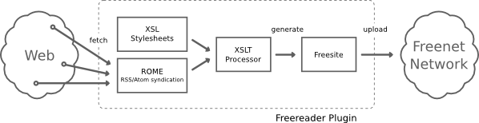

Freereader is a plugin for a Freenet Node. The goals of Freereader are to provide an easy, semi-automatically way to fill the Freenet Network with interesting and useful content therefore Freereader allows easily uploading of news feeds into Freenet as so-called Freesites. You can then spread those Freesites with the latest news to Freenet users which don't have the privilege to have access to a free and uncensored internet. Freereader will automatically take care of fetching the latest news and updating your Freereader Freesite on a regular basis. Freereader supports the popular feed-formats RSS and ATOM.
Freereader is a Freenet Plugin therefore you have to install an up-to-date version of Freenet first. If Freenet is running all requirements for Freereader should also be fulfilled.
After successful installation of the Freereader plugin you will find a new navigation menu:
On the Status page you can find the current plugin status. If your Freesite has already been uploaded you find the link to the site on this page also. You can then give the link to your friends in order to grant them access to your Freereader Freesite.
Before the plugin can upload a Freesite you have to add some feeds under the “Add/Remove Feeds” page. There you can add a feed by entering a single URL to an RSS or ATOM document or by uploading an OPML-file that contains multiple feed URLs. Most existing Feedreaders are able to export to the OPML-format. But be warned: The feeds will be fetched over the Internet (not over Freenet).
On the Configuration page you can configure the interval of Freereader to update your Freesite and also some additional settings.

As Freenet itself the Freereader Plugin is written in Java. It uses the ROME library for RSS/ATOM syndication. Freereader supports multiple themes for the Freesite it generates. A theme consists of an XSL-stylesheet that — given an XML-markup of the current feed — transforms this markup into (X)HTML. A theme can optionally include additional assets, for example images and CSS stylesheets. The Java API for XML processing (JAXP) has an XSLT processor on board and is used to generate a Freesite out of the fetched news feeds. After the generation has been finished Freereader uses the Freenet Plugin API to upload the Freesite into the Freenet Network. Freereader also manages the creation of an SSK for the Freesite.
Freereader is free software: you can redistribute it and/or modify it under the terms of the GNU General Public License version 3 as published by the Free Software Foundation.
Freereader is distributed in the hope that it will be useful, but without any warranty; without even the implied warranty of merchantability or fitness for a particular purpose. See the GNU General Public License for more details.
You should have received a copy of the GNU General Public License along with Freereader. If not, see http://www.gnu.org/licenses/.
Mario Volke